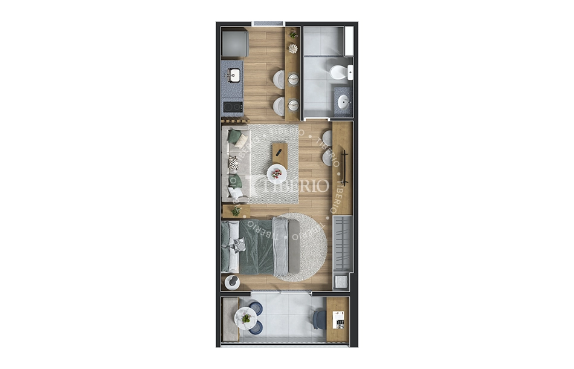
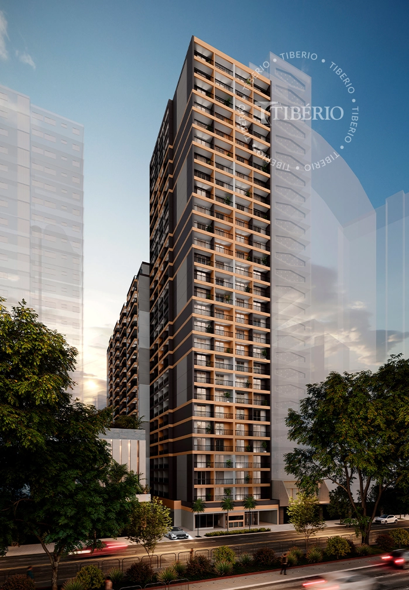
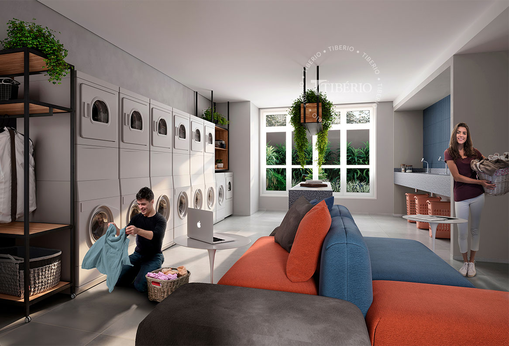
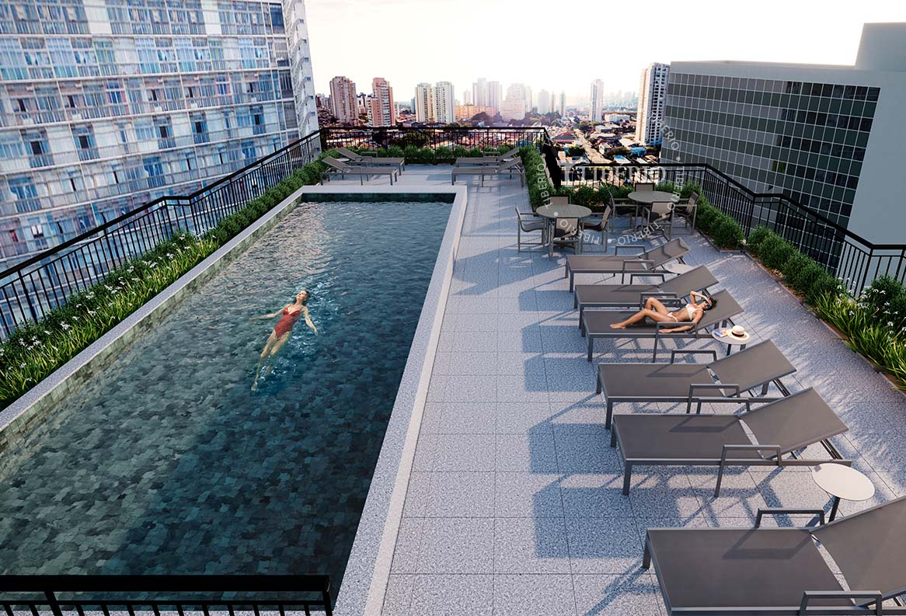

Studios
Plantas divulgadas com metragens de aproximadamente 29,55 m² a 38,82 m². Consulte as opções disponíveis e as características de cada unidade.
Conheça o Metropolitan Consolação, empreendimento da Tibério na Rua da Consolação, 268. São studios e apartamentos de 1 e 2 dormitórios, com metragens divulgadas de 29,55 m² a 39,84 m², a aproximadamente 500 metros da Estação República do Metrô.
Consultar valores e disponibilidadeO Metropolitan Consolação é um empreendimento residencial da Tibério localizado na Rua da Consolação, 268, na região central de São Paulo.
O projeto reúne studios e apartamentos de 1 e 2 dormitórios, com plantas divulgadas entre 29,55 m² e 39,84 m². A localização fica a aproximadamente 500 metros da Estação República, com acesso à mobilidade, cultura, gastronomia, serviços e educação.
Para quem procura um imóvel compacto em uma região central, vale conhecer as plantas, os diferenciais do condomínio e as condições comerciais disponíveis.

Veja imagens da fachada, dos studios e dos espaços de lazer do empreendimento.



Conheça as tipologias divulgadas pela Tibério e consulte as plantas e unidades disponíveis no Metropolitan Consolação.
Plantas divulgadas com metragens de aproximadamente 29,55 m² a 38,82 m². Consulte as opções disponíveis e as características de cada unidade.
O empreendimento contempla opções de apartamentos de 1 e 2 dormitórios. Consulte plantas, metragens, configurações e disponibilidade de unidades com vaga.
O projeto reúne espaços de lazer, convivência e conveniência distribuídos pelo empreendimento e pelo rooftop.
Piscina no rooftop com solarium.
Espaços de exercícios indoor e outdoor.
Espaço de lavanderia compartilhada.
Ambientes destinados aos animais de estimação.
Espaço para trabalho e atividades profissionais.
Ambientes para encontros e confraternizações.
Consulte os principais dados do empreendimento residencial na região da Consolação, em São Paulo.
| Empreendimento | Metropolitan Consolação |
| Construtora | Tibério |
| Endereço | Rua da Consolação, 268 – São Paulo – SP |
| Região | Consolação / República, São Paulo |
| Tipologias | Studios e apartamentos de 1 e 2 dormitórios |
| Metragens divulgadas | 29,55 m² a 39,84 m² |
| Proximidade do metrô | Aproximadamente 500 metros da Estação República |
| Vagas | Consulte opções e disponibilidade por unidade |
| Lazer | Rooftop com piscina, fitness, coworking, lavanderia e outros espaços |
| Status | Em construção |
O empreendimento está localizado na Rua da Consolação, 268, em uma região central de São Paulo. A proximidade da Estação República facilita o deslocamento e o acesso a comércio, serviços, cultura, gastronomia e instituições de ensino.
O empreendimento fica na Rua da Consolação, 268, em São Paulo, na região central da cidade.
O projeto contempla studios e apartamentos de 1 e 2 dormitórios. Consulte as plantas e a disponibilidade atualizada.
As metragens divulgadas pela construtora vão de 29,55 m² a 39,84 m², conforme a tipologia.
Sim. O empreendimento fica a aproximadamente 500 metros da Estação República.
Consulte as opções comerciais e confirme a disponibilidade e as características da vaga para cada unidade.
Sim. O projeto apresenta piscina no rooftop, além de outros espaços de lazer e convivência.
Entre em contato pelo WhatsApp para solicitar plantas, tabela de preços, condições comerciais e disponibilidade.
Solicite as plantas dos studios e apartamentos de 1 e 2 dormitórios. Consulte valores, disponibilidade, opções com vaga e condições comerciais atualizadas diretamente pelo WhatsApp.
Falar com Sandro pelo WhatsAppExplore outras opções residenciais no site Sandro Imóveis Inteligentes.
Ver empreendimentos